複製引用代碼到攻略 Markdown，即可顯示圖示與文字。角色資料整合於角色列表；此表只列共用圖示。
81 筆；下載時間 2026-09-29T07:43:39.519Z；圖片版權屬 miHoYo／HoYoverse。
| 引用 | 圖示與文字 | 分類 | Wiki ID | 備註 | 來源 |
|---|---|---|---|---|---|
{{element:physical}} | 物理 | element | 來源 | ||
{{element:fire}} | 火屬性 | element | 來源 | ||
{{element:ice}} | 冰屬性 | element | 來源 | ||
{{element:electric}} | 電屬性 | element | 來源 | ||
{{element:ether}} | 以太 | element | 來源 | ||
{{element:wind}} | 風屬性 | element | 來源 | ||
{{element:light}} | 流明 | element | 來源 | ||
{{element:frost}} | 烈霜屬性 | element | 來源 | ||
{{profession:attack}} | 強攻 | profession | 來源 | ||
{{profession:breakthrough}} | 擊破 | profession | 來源 | ||
{{profession:anomaly}} | 異常 | profession | 來源 | ||
{{profession:support}} | 支援 | profession | 來源 | ||
{{profession:defensive}} | 防護 | profession | 來源 | ||
{{profession:rupture}} | 命破 | profession | 來源 | ||
{{profession:fengyu}} | 鋒御 | profession | 來源 | ||
{{stat:hp}} | 生命值 | stat | 來源 | ||
{{stat:atk}} | 攻擊力 | stat | 來源 | ||
{{stat:def}} | 防禦力 | stat | 來源 | ||
{{stat:impact}} | 衝擊力 | stat | 來源 | ||
{{stat:crit_rate}} | 暴擊率 | stat | 來源 | ||
{{stat:crit_dmg}} | 暴擊傷害 | stat | 來源 | ||
{{stat:anomaly_proficiency}} | 異常精通 | stat | 來源 | ||
{{stat:anomaly_mastery}} | 異常掌控 | stat | 來源 | ||
{{stat:pen_ratio}} | 穿透率 | stat | 來源 | ||
{{stat:pen_value}} | 穿透值 | stat | 來源 | ||
{{stat:energy_regen}} | 能量自動回復 | stat | 來源 | ||
{{stat:physical}} | 物理傷害加成 | stat | 來源 | ||
{{stat:fire}} | 火屬性傷害加成 | stat | 來源 | ||
{{stat:ice}} | 冰屬性傷害加成 | stat | 來源 | ||
{{stat:electric}} | 電屬性傷害加成 | stat | 來源 | ||
{{stat:ether}} | 以太傷害加成 | stat | 來源 | ||
{{stat:wind}} | 風屬性傷害加成 | stat | 來源 | ||
{{stat:perforation}} | 貫穿力 | stat | 來源 | ||
{{stat:energyaccumulation}} | 閃能自動累積 | stat | 來源 | ||
{{stat:accumulation}} | 銳能自動累積 | stat | 來源 | ||
{{stat:sharp}} | 銳暴傷害 | stat | 來源 | ||
{{rarity:s}} | S級 | rarity | 來源 | ||
{{rarity:a}} | A級 | rarity | 來源 | ||
{{rarity:b}} | B級 | rarity | 來源 | ||
{{action:normal}} | 普通攻擊 | action | 來源 | ||
{{action:special}} | 特殊技 | action | 來源 | ||
{{action:special_ready}} | 強化特殊技 | action | 來源 | ||
{{action:dodge}} | 閃避 | action | 來源 | ||
{{action:support}} | 支援技 | action | 來源 | ||
{{action:chain}} | 連攜技 | action | 來源 | ||
{{action:ultimate}} | 終結技 | action | 來源 | ||
{{action:ultimate_ready}} | 終結技（可發動） | action | 來源 | ||
{{action:core}} | 核心技 | action | 來源 | ||
{{action:move}} | 移動 | action | 來源 | ||
{{element:honededge}} | 凜刃 | element | 來源 | ||
{{element:auricink}} | 玄墨 | element | 來源 | ||
{{disc:1177}} | 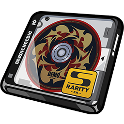 荊棘玫瑰 | disc | 1177 | 來源 | |
{{disc:1176}} | 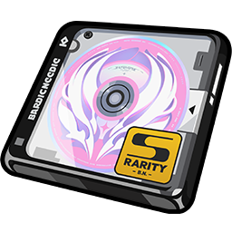 讖羽之誓 | disc | 1176 | 來源 | |
{{disc:1109}} | 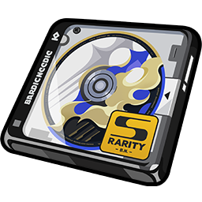 拂曉行紀 | disc | 1109 | 來源 | |
{{disc:1108}} | 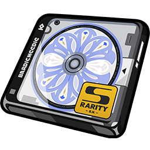 呼嘯沙龍 | disc | 1108 | 來源 | |
{{disc:1070}} | 囚徒手記 | disc | 1070 | 來源 | |
{{disc:1069}} | 雪兔夢遊仙境 | disc | 1069 | 來源 | |
{{disc:993}} | 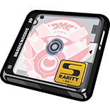 流光詠嘆 | disc | 993 | 來源 | |
{{disc:992}} | 滄浪行歌 | disc | 992 | 來源 | |
{{disc:914}} | 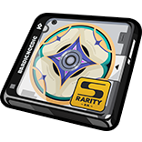 月光騎士頌 | disc | 914 | 來源 | |
{{disc:913}} | 拂曉生花 | disc | 913 | 來源 | |
{{disc:790}} | 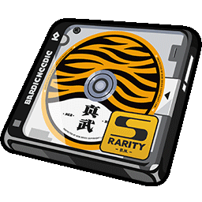 山大王 | disc | 790 | 來源 | |
{{disc:789}} | 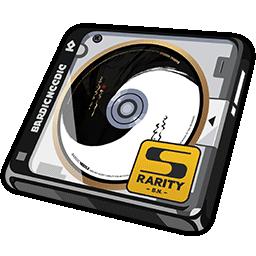 雲巋如我 | disc | 789 | 來源 | |
{{disc:625}} | 如影相隨 | disc | 625 | 來源 | |
{{disc:624}} | 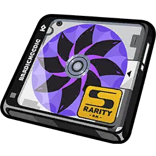 法厄同之歌 | disc | 624 | 來源 | |
{{disc:547}} | 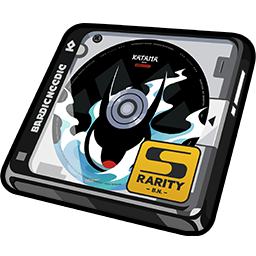 折枝劍歌 | disc | 547 | 來源 | |
{{disc:546}} | 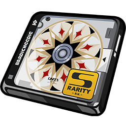 靜聽嘉音 | disc | 546 | 來源 | |
{{disc:392}} | 混沌爵士 | disc | 392 | 來源 | |
{{disc:391}} | 原始龐克 | disc | 391 | 來源 | |
{{disc:137}} | 獠牙重金屬 | disc | 137 | 來源 | |
{{disc:136}} | 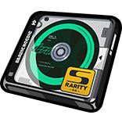 極地重金屬 | disc | 136 | 來源 | |
{{disc:135}} | 雷暴重金屬 | disc | 135 | 來源 | |
{{disc:134}} | 混沌重金屬 | disc | 134 | 來源 | |
{{disc:133}} | 炎獄重金屬 | disc | 133 | 來源 | |
{{disc:132}} | 靈魂搖滾 | disc | 132 | 來源 | |
{{disc:131}} | 激素龐克 | disc | 131 | 來源 | |
{{disc:130}} | 自由藍調 | disc | 130 | 來源 | |
{{disc:129}} | 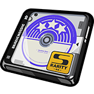 震星迪斯可 | disc | 129 | 來源 | |
{{disc:128}} | 河豚電音 | disc | 128 | 來源 | |
{{disc:127}} | 啄木鳥電音 | disc | 127 | 來源 | |
{{disc:5}} | 搖擺爵士 | disc | 5 | 來源 |